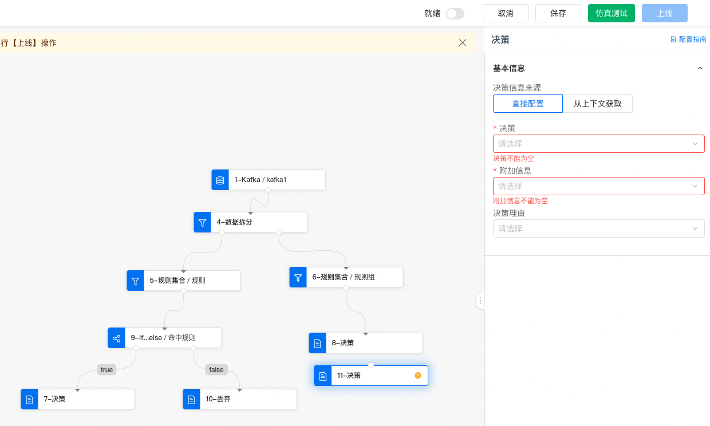
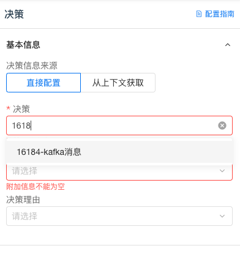
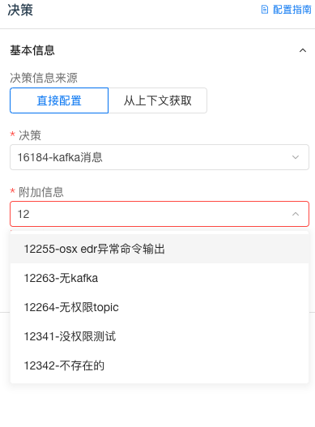
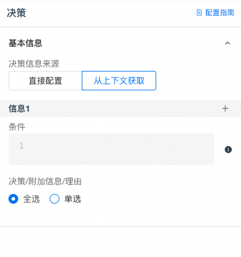
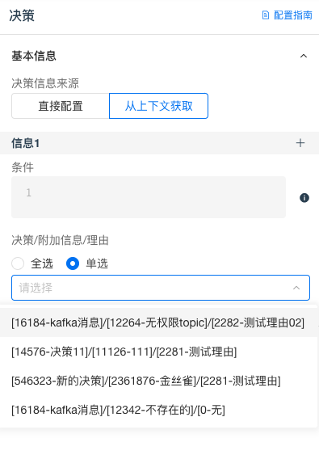
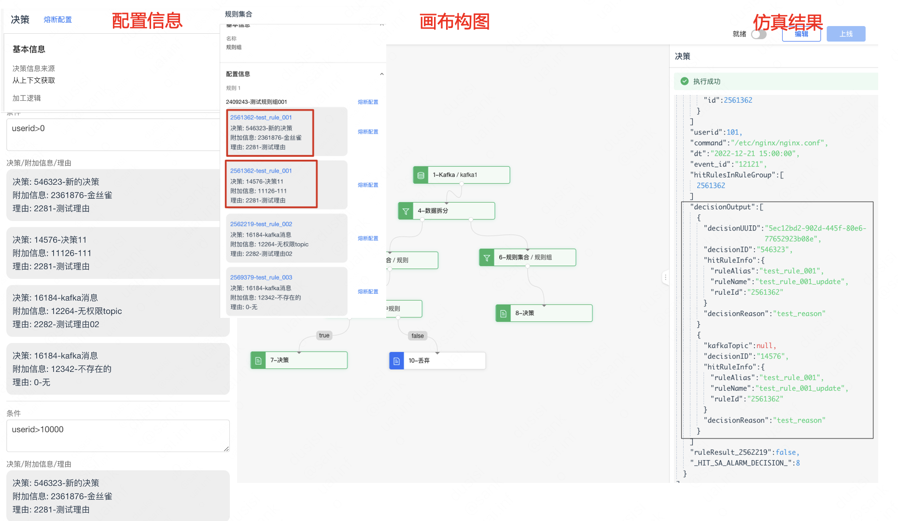

说明：画布- 决策信息配置指南
一、背景
见画布背景
二、名词解释
决策信息：命中画布之后的结果及动作
三、操作指南
|
说明
|
页面
|
|
【入口】
Zeus-->策略部署-->画布
【基础配置】
- 点击右上角「新建画布」，在弹框中按要求填写完成「画布中文名称」和「画布英文名称」并保存后，自动跳转到画布配置页面；
- 左侧为工具栏，涵盖画布配置所需的所有支持的组件；
-
将决策信息组件拖拽到画布中央，点击组件，右侧出现组件基本信息配置模块
-
直接配置：
- 执行逻辑说明：配置什么就执行什么信息
- 配置说明：支持空间下决策、决策附加信息和决策理由的配置
- 新增决策、决策附加信息和决策理由操作说明（废弃）说明：创建/修改决策、说明：决策理由使用
-
从上下文获取：
- 执行逻辑说明：上下文获取决策信息 主要用做画布中的规则集合组件中引用了规则组，规则组中规则的决策信息。支持使用默认的配置信息，可以选择不使用；
-
配置说明：
- 信息1-条件1:支持aviator表达式撰写，满足条件即输出配置的决策信息
-
决策/附加信息/理由
- 全选：使用默认的配置信息，执行上会输出规则组中命中规则对应的决策信息，同时满足决策组件下配置的条件；
- 单选：可选择规则组下配置的决策信息，执行上会规则组中配置该决策对应规则命中 且满足决策组件下配置的条件 输出该决策。
|

直接配置：
 
从上下文获取
 
|
四、执行信息说明
1.单选决策：与原决策组件逻辑相同:
2.上下文获取：上下文的加工逻辑，仍是以命中规则 对应的决策

五、FAQ
1.在规则集合+决策组件的组合逻辑说明：
A：规则集合-规则，后面决策输出 需 if-else+直接配置决策
规则集合-规则组，后面决策输出 需 if-else+直接配置决策 或者 上下文决策
规则集合-规则组+规则，后面决策输出 需 if-else+直接配置决策，此时若仍想使用上下文决策，此时规则集合中的规则命中信息是没有独立决策的。